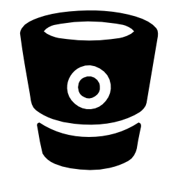

<div ng-init="initIntegration();getSlackChannels()">
    <div class="left-tabbar"> <!-- required for floating -->
        <!-- Nav tabs -->
        <ul class="nav nav-tabs tabs-left side-tab">
            <li ng-class="{ active: isActive('/integration?app=jira') }" ng-click="activeTab('jira')"><a href=""  data-toggle="tab"> JIRA</a></li>
            <li ng-class="{ active: isActive('/integration?app=slack') }" ng-click="activeTab('slack')"><a href="" data-toggle="tab"> SLACK</a></li>
            <li ng-class="{ active: isActive('/integration?app=hipchat') }" ng-click="activeTab('hipchat')"><a href="" data-toggle="tab"> HIPCHAT</a></li>
            <li ng-class="{ active: isActive('/integration?app=github') }" ng-click="activeTab('github')"><a href="" data-toggle="tab"> GITHUB</a></li>
            <li ng-class="{ active: isActive('/integration?app=bit-bucket') }" ng-click="activeTab('bit-bucket')"><a href="" data-toggle="tab"> BIT BUCKET</a></li>
        </ul>
    </div>

    <div class="tab-content" ng-init="getJiraConnection()">
        <div class="tab-pane active" ng-show="mode === 'jira'">
            <div class="intergration-wrapper">
                <h3>Connect to JIRA to Fetch Project and User Information</h3>
                <hr />
                <div class="row">
                    <div class="col-md-4"> 
                        <button class="btn btn-default status-submit" data-toggle="collapse" data-target="#intergration-form" ng-hide="isConnected"> CONNECT</button>

                        <button class="btn btn-default status-submit after" ng-click="syncJiraProject()" ng-show="isConnected"><i class="fa fa-refresh" aria-hidden="true" ></i> Sync Project</button>

                        <button class="btn btn-default status-submit after" ng-show="isConnected"><i class="fa fa-refresh" aria-hidden="true"></i> Sync Users</button>

                        <button class="btn btn-default status-submit after" ng-show="isConnected"><i class="fa fa-link" aria-hidden="true"></i> Link Users & Projects</button>
                    </div>


                    <div class="col-md-8">
                        <div class="connected" ng-show="isConnected"><p>Connected</p></div>
                        <div class="offline" ng-show="isOffline"><p>Offline</p></div>
                    </div>


                    <form name="form" style="margin-top:100px;">
                        <div class="col-md-6">
                            <div id="intergration-form" class="collapse">
                                <label class="settings">JIRA Base url</label> 
                                <input type="text" class="form-control" ng-model="jiraurl" required />

                                <label class="settings">Username</label> 
                                <input type="text" class="form-control" ng-model="username" required />

                                <label class="settings">Password</label> 
                                <input type="password" class="form-control" ng-model="password" required />
                                <br />
                                <input type="submit" value="Connect" class="btn btn-default" ng-click="connectToJira()" data-toggle="collapse" data-target="#intergration-form">
                            </div>
                        </div>

                    </form>
                    <div class="col-md-6">
                    </div>
                </div>
            </div>
        </div>

        <div class="{{activeTabClass}}" ng-show="mode === 'slack'">
            <div class="intergration-wrapper">
                <div class="row">
                    <form action="{{slackUrl}}" method="post" ng-hide="isSlackConnect">
                        <div class="col-md-4"> 
                            <input type="hidden" name="scope" value="users.profile:read,users:read,channels:read,channels:write,im:read,im:write,chat:write:user,chat:write:bot" />
                            <button class="btn btn-default status-submit"> Add to Slack</button>
                        </div>
                    </form>
                </div>
                <div class="row" ng-show="isSlackConnect">
                    <div class="col-md-4"> 
                        <select class="form-control" ng-model="selectedChannel">	
                            <option value="">--- Select Channel ---</option>
                            <option ng-repeat="channel in channelList" value="{{channel.id}}" >{{channel.name}}</option>
                        </select>
                    </div>
                    <div class="row"> 
                        <input type="submit" value="Set Channel" class="btn btn-default" ng-click="setChannel()" data-toggle="collapse" data-target="#intergration-form">
                    </div>
                </div>
            </div>
        </div>

        <div class="{{activeTabClass}}" ng-show="mode === 'hipchat'">
            <div class="intergration-wrapper">
                
            </div>
        </div>


        <div class="{{activeTabClass}}" ng-show="mode === 'github'">
            <div class="intergration-wrapper">
                
                <!--		below code commented because from angular side integration is pending 	 
                <form action="/social/github" method="post">
                                                <button type="submit">Connect to Github</button>
                                        </form>-->
            </div>
        </div>


        <div class="{{activeTabClass}}" ng-show="mode === 'bit-bucket'">
            <div class="intergration-wrapper">
                
                <!--            
                <form action="/social/bitbucket" method="post">
                                <button type="submit">Connect to Bitbucket</button>
                            </form>-->
            </div>
        </div>
    </div>
</div>
